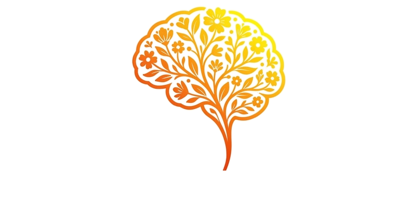

to be: negative and questions
To be: үгүйсгэх ба асуух хэлбэр
By the end, you can say no, ask questions and meet someone new.
Энэ хичээлийн төгсгөлд үгүйсгэж, асууж, шинэ хүнтэй танилцаж чадна.

A first conversation
Анхны танилцах яриа
Saraa
Are you a new student?
Чи шинэ сурагч уу?
Tuvshin
Yes, I am.
Тийм ээ.
Saraa
Are you from Ulaanbaatar?
Чи Улаанбаатарынх уу?
Tuvshin
No, I'm not. I'm from Khovd.
Үгүй. Би Ховдынх.
Saraa
Is your sister at this school too?
Эгч чинь бас энэ сургуульд сурдаг уу?
Tuvshin
No, she isn't. She's at university.
Үгүй. Тэр их сургуульд сурдаг.
Questions start with are or is. To say no, use not.
Асуулт are, is-ээр эхэлнэ. Үгүйсгэхдээ not хэрэглэнэ.
Saying no
Үгүйсгэх
I am not tired.
Би ядраагүй байна.
He isn't at home.
Тэр гэртээ байхгүй.
We aren't late.
Бид хоцроогүй.
It is not cold today.
Өнөөдөр хүйтэн биш байна.
not comes straight after am, is or are.
not нь am, is, are-ийн яг ард орно.
The negative
Үгүйсгэх хэлбэр
Subject
Өгүүлэгдэхүүн
Full form
Бүтэн хэлбэр
Short form
Товч хэлбэр
I
am not
I'm not
he / she / it
is not
isn't · he's not
you / we / they
are not
aren't · you're not
There is no amn't.
Amn't гэж байдаггүй.
Making a question
Асуулт үүсгэх
Youarea student.
Чи сурагч.
Areyoua student?
Чи сурагч уу?
She is at home. Is she at home?
Тэр гэртээ байна уу?
Bat is 12. Is Bat 12?
Бат 12 настай юу?
The verb jumps to the front. Your voice goes up.
Үйл үг урд гарна. Дуу дээшилнэ.
Short answers
Богино хариулт
Question
Асуулт
Yes
Тийм
No
Үгүй
Are you ready?
Чи бэлэн үү?
Yes, I am.
No, I'm not.
Is she your sister?
Тэр чиний эгч үү?
Yes, she is.
No, she isn't.
Are they at school?
Тэд сургууль дээрээ байна уу?
Yes, they are.
No, they aren't.
Is Bat 12?
Бат 12 настай юу?
Yes, he is.
No, he isn't.
Yes keeps the full form. No can be short.
Yes бол бүтэн хэлбэр, No бол товч хэлбэр болж болно.
Question words
Асуух үг
Question wordасуух үг+am / is / areүйл үг+subjectөгүүлэгдэхүүн
What is your name?
Чамайг хэн гэдэг вэ?
I'm Anu.
Намайг Ану гэдэг.
Where are you from?
Чи хаанаас ирсэн бэ?
I'm from Khovd.
Би Ховдоос ирсэн.
How old is your sister?
Дүү чинь хэдэн настай вэ?
She's 8.
8 настай.
Who is that?
Тэр хэн бэ?
That's my teacher.
Тэр миний багш.
With a question word, your voice goes down.
Асуух үгтэй асуултад дуу доошилно.
Watch out!
Анхаар!
In Mongolian, the word order stays the same in a question.
Монголоор асуултад үгийн дараалал өөрчлөгддөггүй.
Буруу
You are a student?
Зөв
Are you a student?
Чи сурагч уу?
Буруу
Where you are from?
Зөв
Where are you from?
Чи хаанаас ирсэн бэ?
Буруу
Yes, I'm.
Зөв
Yes, I am.
Тийм ээ.
Remember
Санаж ав
1
Negative: am not · isn't · aren't
Үгүйсгэл: not-ийг үйл үгийн ард.
2
Question: swap. Are you ...? Where is ...?
Асуулт: байрыг соль.
3
Yes, I am. · No, I'm not.
Тийм бол бүтэн хэлбэр, үгүй бол товч хэлбэр.
Now try the exercises below this video.
Одоо энэ видеоны доорх дасгалаар мэдлэгээ шалгаарай.